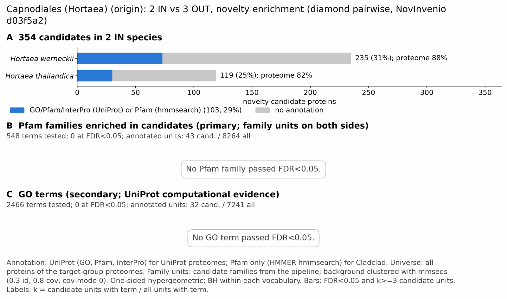

yc capnodiales: functional enrichment (novelty)
One-sided hypergeometric test per term; Benjamini-Hochberg FDR within each scope, level and vocabulary. Candidates are the novelty candidates: gene families present in the IN group and absent from the OUT group. Universe: proteome. Background clustered: True (23881 sequences in 11087 clusters, mmseqs easy-cluster --min-seq-id 0.3 -c 0.8). Family level: one unit per candidate family and per background cluster.
Sources: Pfam: 2026-01-27-Pfam38.2; InterPro entries: 110.0; GO: releases/2026-07-26; analysis generated 2026-10-24T14:35:49. Source tables: /bigdata/stajichlab/jstajich/projects/NovInvenio_Investigations/studies/fungi/yeast_convergence/yc_capnodiales/analysis/enrichment/outputs/proteome_clustered.
Full record: PROVENANCE. Run report: report.html.
- Annotation provenance is not fully recorded: PROVENANCE.yaml lists the per-species annotation files and their checksums, but not the UniProt release they come from.
- GO results are secondary. GO annotations include computational evidence (IEA, IBA); the GO evidence column shows if a term has non-IEA support.
- Candidate families (pipeline clustering of candidates) and background clusters (mmseqs clustering of the background proteome) are made by different runs, so family-level counts are not fully comparable.
- Low annotation: the candidate set has less than 50% annotation for Pfam 18.4%, InterPro 29.1%, GO 11.3%, any vocabulary 29.1%. Enrichment for these vocabularies has low power.
Summary figure

Annotation coverage
Fraction of proteins with at least one term per vocabulary. Universe = all proteins of the species; candidates = the candidate set.
| Species | Set | Proteins | Pfam | Pfam clan | InterPro | GO | Any |
|---|---|---|---|---|---|---|---|
| Hortwern | universe | 15464 | 83.1% | 68.3% | 88.0% | 73.7% | 88.3% |
| Hortwern | candidates | 235 | 20.4% | 11.9% | 31.1% | 12.8% | 31.1% |
| Hortthai | universe | 8771 | 76.5% | 62.6% | 81.5% | 67.6% | 81.8% |
| Hortthai | candidates | 119 | 14.3% | 8.4% | 25.2% | 8.4% | 25.2% |
| ALL_IN | universe | 24235 | 80.7% | 66.2% | 85.7% | 71.5% | 85.9% |
| ALL_IN | candidates | 354 | 18.4% | 10.7% | 29.1% | 11.3% | 29.1% |
Tests summary
Per vocabulary: terms with FDR < 0.05 / terms tested. Protein level counts proteins; family level counts candidate families and background clusters.
| Scope | Level | Cand. units | Pfam sig / tested | Pfam clan sig / tested | InterPro sig / tested | GO sig / tested |
|---|---|---|---|---|---|---|
| whole_set | family | 277 | 0 / 548 | 0 / 283 | 0 / 1210 | 0 / 2466 |
| whole_set | protein | 354 | 10 / 1421 | 2 / 394 | 7 / 3111 | 0 / 3861 |
| Hortthai | family | 119 | 0 / 299 | 0 / 235 | 0 / 757 | 0 / 2056 |
| Hortthai | protein | 119 | 0 / 365 | 0 / 246 | 0 / 900 | 0 / 2178 |
| Hortwern | family | 210 | 0 / 420 | 0 / 264 | 0 / 979 | 0 / 2314 |
| Hortwern | protein | 235 | 0 / 851 | 0 / 332 | 0 / 1879 | 0 / 3080 |
Top 25 Pfam terms (whole set, family level)
25 rows shown, ordered by FDR then p-value; 0 have FDR < 0.05 (bold).
| Term | Name | k / N cand. | n / M bg | Fold | FDR (BH) |
|---|---|---|---|---|---|
| PF04525 | LOR: LURP-one-related | 2 / 43 | 6 / 8264 | 64.062 | 0.100 |
| PF28480 | Con-8: Conidiation-specific protein 8 | 2 / 43 | 6 / 8264 | 64.062 | 0.100 |
| PF11790 | Glyco_hydro_cc: Glycosyl hydrolase catalytic core | 2 / 43 | 7 / 8264 | 54.91 | 0.100 |
| PF00326 | Peptidase_S9: Prolyl oligopeptidase family | 1 / 43 | 5 / 8264 | 38.437 | 1.000 |
| PF03453 | MoeA_N: MoeA N-terminal region (domain I and II) | 1 / 43 | 5 / 8264 | 38.437 | 1.000 |
| PF12311 | DUF3632: Protein of unknown function (DUF3632) | 1 / 43 | 5 / 8264 | 38.437 | 1.000 |
| PF13813 | MBOAT_2: Membrane bound O-acyl transferase family | 1 / 43 | 5 / 8264 | 38.437 | 1.000 |
| PF19535 | DUF6060: Family of unknown function (DUF6060) | 1 / 43 | 5 / 8264 | 38.437 | 1.000 |
| PF30970 | DUF8768: Domain of unknown function (DUF8768) | 1 / 43 | 5 / 8264 | 38.437 | 1.000 |
| PF00399 | PIR: Yeast PIR protein repeat | 1 / 43 | 6 / 8264 | 32.031 | 1.000 |
| PF00533 | BRCT: BRCA1 C Terminus (BRCT) domain | 1 / 43 | 6 / 8264 | 32.031 | 1.000 |
| PF00994 | MoCF_biosynth: Probable molybdopterin binding domain | 1 / 43 | 6 / 8264 | 32.031 | 1.000 |
| PF03992 | ABM: Antibiotic biosynthesis monooxygenase | 1 / 43 | 6 / 8264 | 32.031 | 1.000 |
| PF13350 | Y_phosphatase3: Tyrosine phosphatase family | 1 / 43 | 6 / 8264 | 32.031 | 1.000 |
| PF01920 | Prefoldin_2: Prefoldin subunit | 1 / 43 | 7 / 8264 | 27.455 | 1.000 |
| PF04116 | FA_hydroxylase: Fatty acid hydroxylase | 1 / 43 | 7 / 8264 | 27.455 | 1.000 |
| PF01753 | zf-MYND: MYND finger | 1 / 43 | 8 / 8264 | 24.023 | 1.000 |
| PF02798 | GST_N: Glutathione S-transferase, N-terminal domain | 1 / 43 | 8 / 8264 | 24.023 | 1.000 |
| PF01042 | Ribonuc_L-PSP: Endoribonuclease L-PSP | 1 / 43 | 9 / 8264 | 21.354 | 1.000 |
| PF13460 | NAD_binding_10: NAD(P)H-binding | 1 / 43 | 9 / 8264 | 21.354 | 1.000 |
| PF14497 | GST_C_3: Glutathione S-transferase, C-terminal domain | 1 / 43 | 9 / 8264 | 21.354 | 1.000 |
| PF01544 | CorA: CorA-like Mg2+ transporter protein | 1 / 43 | 12 / 8264 | 16.016 | 1.000 |
| PF05730 | CFEM: CFEM domain | 1 / 43 | 14 / 8264 | 13.728 | 1.000 |
| PF00646 | F-box: F-box domain | 1 / 43 | 16 / 8264 | 12.012 | 1.000 |
| PF00651 | BTB: BTB/POZ domain | 1 / 43 | 35 / 8264 | 5.491 | 1.000 |
Top 25 InterPro terms (whole set, family level)
25 rows shown, ordered by FDR then p-value; 0 have FDR < 0.05 (bold).
| Term | Name | k / N cand. | n / M bg | Fold | FDR (BH) |
|---|---|---|---|---|---|
| IPR007612 | Family:LURP-one-related | 2 / 76 | 6 / 8924 | 39.14 | 0.295 |
| IPR025659 | Homologous_superfamily:Tubby-like, C-terminal | 2 / 76 | 6 / 8924 | 39.14 | 0.295 |
| IPR038595 | Homologous_superfamily:LURP-one-related superfamily | 2 / 76 | 6 / 8924 | 39.14 | 0.295 |
| IPR059831 | Family:Conidiation-specific protein 8 | 2 / 76 | 6 / 8924 | 39.14 | 0.295 |
| IPR024655 | Domain:Asl1-like, glycosyl hydrolase catalytic domain | 2 / 76 | 7 / 8924 | 33.549 | 0.295 |
| IPR053183 | 2 / 76 | 7 / 8924 | 33.549 | 0.295 | |
| IPR002893 | Domain:Zinc finger, MYND-type | 2 / 76 | 9 / 8924 | 26.094 | 0.429 |
| IPR036420 | Homologous_superfamily:BRCT domain superfamily | 2 / 76 | 24 / 8924 | 9.785 | 1.000 |
| IPR001357 | Domain:BRCT domain | 2 / 76 | 25 / 8924 | 9.394 | 1.000 |
| IPR001375 | Domain:Peptidase S9, prolyl oligopeptidase, catalytic domain | 1 / 76 | 5 / 8924 | 23.484 | 1.000 |
| IPR005110 | Domain:MoeA, N-terminal and linker domain | 1 / 76 | 5 / 8924 | 23.484 | 1.000 |
| IPR022085 | Family:Oxopyrrolidines biosynthesis cluster protein G | 1 / 76 | 5 / 8924 | 23.484 | 1.000 |
| IPR032805 | Domain:Wax synthase domain | 1 / 76 | 5 / 8924 | 23.484 | 1.000 |
| IPR036135 | Homologous_superfamily:MoeA, N-terminal and linker domain superfamily | 1 / 76 | 5 / 8924 | 23.484 | 1.000 |
| IPR045702 | Domain:Domain of unknown function DUF6060 | 1 / 76 | 5 / 8924 | 23.484 | 1.000 |
| IPR061829 | Domain:Domain of unknown function DUF8768 | 1 / 76 | 5 / 8924 | 23.484 | 1.000 |
| IPR000420 | Repeat:Cell wall mannoprotein PIR repeat | 1 / 76 | 6 / 8924 | 19.57 | 1.000 |
| IPR001453 | Domain:MoaB/Mog domain | 1 / 76 | 6 / 8924 | 19.57 | 1.000 |
| IPR007138 | Domain:Antibiotic biosynthesis monooxygenase domain | 1 / 76 | 6 / 8924 | 19.57 | 1.000 |
| IPR026893 | Family:Tyrosine/serine-protein phosphatase IphP-type | 1 / 76 | 6 / 8924 | 19.57 | 1.000 |
| IPR036425 | Homologous_superfamily:MoaB/Mog-like domain superfamily | 1 / 76 | 6 / 8924 | 19.57 | 1.000 |
| IPR050307 | Family:Sterol desaturase-related | 1 / 76 | 6 / 8924 | 19.57 | 1.000 |
| IPR002777 | Family:Prefoldin beta-like | 1 / 76 | 7 / 8924 | 16.774 | 1.000 |
| IPR006694 | Domain:Fatty acid hydroxylase | 1 / 76 | 7 / 8924 | 16.774 | 1.000 |
| IPR011044 | Homologous_superfamily:Quinoprotein amine dehydrogenase, beta chain-like | 1 / 76 | 7 / 8924 | 16.774 | 1.000 |
Top 15 GO terms (whole set, family level) — secondary, computational evidence (IEA/IBA) included
15 rows shown, ordered by FDR then p-value; 0 have FDR < 0.05 (bold).
| Term | Name | k / N cand. | n / M bg | Fold | FDR (BH) | GO evidence | Families with non-IEA |
|---|---|---|---|---|---|---|---|
| GO:0071966 | biological_process:fungal-type cell wall polysaccharide metabolic process | 2 / 32 | 13 / 7241 | 34.812 | 1.000 | IEA_only | 0 |
| GO:0010383 | biological_process:cell wall polysaccharide metabolic process | 2 / 32 | 18 / 7241 | 25.142 | 1.000 | IEA_only | 0 |
| GO:0030687 | cellular_component:preribosome, large subunit precursor | 2 / 32 | 22 / 7241 | 20.571 | 1.000 | IEA_only | 0 |
| GO:0044036 | biological_process:cell wall macromolecule metabolic process | 2 / 32 | 27 / 7241 | 16.762 | 1.000 | IEA_only | 0 |
| GO:0005618 | cellular_component:cell wall | 2 / 32 | 37 / 7241 | 12.231 | 1.000 | IEA_only | 0 |
| GO:0009277 | cellular_component:fungal-type cell wall | 2 / 32 | 37 / 7241 | 12.231 | 1.000 | IEA_only | 0 |
| GO:0030312 | cellular_component:external encapsulating structure | 2 / 32 | 37 / 7241 | 12.231 | 1.000 | IEA_only | 0 |
| GO:0005730 | cellular_component:nucleolus | 3 / 32 | 136 / 7241 | 4.991 | 1.000 | IEA_only | 0 |
| GO:0004112 | molecular_function:cyclic-nucleotide phosphodiesterase activity | 1 / 32 | 5 / 7241 | 45.256 | 1.000 | IEA_only | 0 |
| GO:0009306 | biological_process:protein secretion | 1 / 32 | 5 / 7241 | 45.256 | 1.000 | IEA_only | 0 |
| GO:0035592 | biological_process:establishment of protein localization to extracellular region | 1 / 32 | 5 / 7241 | 45.256 | 1.000 | IEA_only | 0 |
| GO:0071692 | biological_process:protein localization to extracellular region | 1 / 32 | 5 / 7241 | 45.256 | 1.000 | IEA_only | 0 |
| GO:0005199 | molecular_function:structural constituent of cell wall | 1 / 32 | 7 / 7241 | 32.326 | 1.000 | IEA_only | 0 |
| GO:0007095 | biological_process:mitotic G2 DNA damage checkpoint signaling | 1 / 32 | 7 / 7241 | 32.326 | 1.000 | IEA_only | 0 |
| GO:0005869 | cellular_component:dynactin complex | 1 / 32 | 8 / 7241 | 28.285 | 1.000 | IEA_only | 0 |
Actin cytoskeleton controls
Known actin-related families and how many of their proteins pass each filter. Protein ID columns are left out.
| control | pfam_ids | desc_regex | IN_universe | IN_in_matrix | IN_pass_ingroup_rule | candidates | near_miss_out1 | near_miss_out2 | n_Hortwern | n_Hortthai | n_Pseufiji | n_Dothsept | n_Cladclad |
|---|---|---|---|---|---|---|---|---|---|---|---|---|---|
| Arp2/3 ARPC2 (P34-Arc) | PF04045 | 3 | 3 | 3 | 0 | 0 | 0 | 2 | 1 | 1 | 1 | 1 | |
| Arp2/3 ARPC3 (P21-Arc) | PF04062 | 3 | 3 | 3 | 0 | 0 | 0 | 2 | 1 | 1 | 1 | 1 | |
| Arp2/3 ARPC4 | PF05856 | 3 | 3 | 3 | 0 | 0 | 0 | 2 | 1 | 1 | 1 | 1 | |
| Arp2/3 ARPC5 (P16-Arc) | PF04699 | 2 | 2 | 2 | 0 | 0 | 0 | 1 | 1 | 1 | 1 | 1 | |
| Arp2/3 ARPC1 (description only) | arp2/3 complex.*(41|p41|subunit 1)|ARPC1 | 0 | 0 | 0 | 0 | 0 | 0 | 0 | 0 | 0 | 0 | 0 | |
| Arp2 / Arp3 (description only) | actin-related protein (2|3)\b|\bARP[23]\b | 20 | 20 | 20 | 0 | 0 | 0 | 13 | 7 | 6 | 6 | 0 | |
| WAVE complex NCKAP1 | PF09735 | 0 | 0 | 0 | 0 | 0 | 0 | 0 | 0 | 0 | 0 | 0 | |
| WAVE complex CYFIP (FragX_IP) | PF05994 | 0 | 0 | 0 | 0 | 0 | 0 | 0 | 0 | 0 | 0 | 0 | |
| WAVE complex ABI | PF07815|PF27594 | 0 | 0 | 0 | 0 | 0 | 0 | 0 | 0 | 0 | 0 | 0 | |
| SCAR/WAVE (SCAR_helical) | PF27569 | 0 | 0 | 0 | 0 | 0 | 0 | 0 | 0 | 0 | 0 | 0 | |
| WASP family (WH1) | PF00568 | 3 | 3 | 3 | 0 | 0 | 0 | 2 | 1 | 1 | 1 | 1 | |
| WH2 motif (WASP, WAVE, others) | PF02205 | 8 | 8 | 8 | 0 | 1 | 1 | 5 | 3 | 3 | 3 | 3 | |
| Formin FH2 | PF02181 | 3 | 3 | 3 | 0 | 0 | 0 | 2 | 1 | 1 | 1 | 1 | |
| Formin Drf_GBD / Drf_FH3 / Drf_DAD | PF06371|PF06367|PF06345 | 6 | 6 | 6 | 0 | 0 | 0 | 4 | 2 | 2 | 2 | 1 | |
| Ena/VASP (VASP_tetra) | PF08776 | 0 | 0 | 0 | 0 | 0 | 0 | 0 | 0 | 0 | 0 | 0 | |
| Coronin (description only) | coronin | 3 | 3 | 3 | 0 | 0 | 0 | 2 | 1 | 1 | 1 | 0 | |
| Cortactin (HS1_rep) | PF02218 | 0 | 0 | 0 | 0 | 0 | 0 | 0 | 0 | 0 | 0 | 0 | |
| Myosin 2 tail (Myosin_tail_1) | PF01576 | 0 | 0 | 0 | 0 | 0 | 0 | 0 | 0 | 0 | 0 | 0 | |
| Myosin head (all myosins) | PF00063 | 14 | 14 | 14 | 0 | 0 | 0 | 10 | 4 | 5 | 5 | 5 |
Page written by bin/generate_enrichment_page.py.